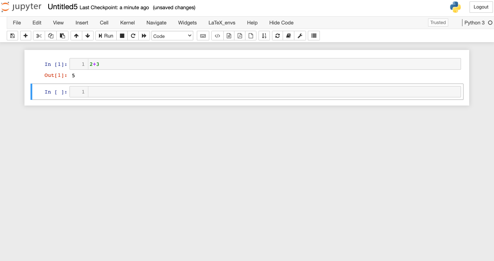

1.2 Python basics
Contents
1.2 Python basics#
We recommend using the free and open-source Python package manager Anaconda (Individual Edition https://www.anaconda.com/products/individual). Go to the webpage and choose the installer according to your operating system. At the time of writing this book, Python Version 3.8 is installed by default, which is also the version we use in this book. There are different environments and editors to run Python. Here we will use the Jupyter environment, which will be ready after Anaconda is installed. There are several tutorials and other resources on Python at https://www.python.org/ where one can find up-to-date information on Python.
The Jupyter environment uses the so-called Jupyter notebook where one can write and edit a Python code, run the code, and export the work into various file formats including Latex and pdf. Most of our interaction with Python will be through the Jupyter notebooks. Note that Anaconda, once installed, has already preinstalled a large number of commonly used Python packages, so it is not necessary to install new packages for the purpose of running the codes in this book.
After installing Anaconda, open a Jupyter notebook by following Anaconda \(\rightarrow\) Jupyter Notebook \(\rightarrow\) new \(\rightarrow\) Python 3. Here is a screenshot of my notebook:

Let’s start with some basic computations.
2+3
5
Now we import the sin and log function, as well as the \(\pi\) constant from the math package,
from math import sin, pi, log
and compute \(\sin{(\pi/4)}\):
sin(pi/4)
0.7071067811865476
One way to learn about a function is to search for it online in the Python documentation https://docs.python.org/3/. For example, the syntax for the logarithm function in the math package is \(\log (x[,b])\) where \(b\) is the optional base. If \(b\) is not provided, the natural logarithm of \(x\) (to base \(e\)) is computed.
log(4,2)
2.0
Numpy arrays#
NumPy is a useful Python package for array data structure, random number generation, linear algebra algorithms, and so on. A NumPy array is a data structure that can be used to represent vectors and matrices, for which the computations are also made easier. Import the NumPy package and define an alias (np) for it.
import numpy as np
Here is the basic syntax to create a \(1\)D NumPy array (representing a vector):
x = np.array([10, 20, 30])
x
array([10, 20, 30])
The following line of code shows the entries of the created array are integers of 32 bits.
x.dtype
dtype('int32')
If we input a real, Python will change the type accordingly:
x = np.array([10, 20, 30, 0.1])
x
array([10. , 20. , 30. , 0.1])
x.dtype
dtype('float64')
A 1D NumPy array does not assume a particular row or column arrangement of the data, and hence taking transpose for a 1D NumPy array is not valid. Here is another way to construct a 1D array, and some array operations:
x = np.array([10*i for i in range(1, 6)])
x
array([10, 20, 30, 40, 50])
x[-1]
50
min(x)
10
np.sum(x)
150
x = np.append(x, 99)
x
array([10, 20, 30, 40, 50, 99])
x[3]
40
x.size
6
The NumPy package has a wide range of mathematical functions such as \(\sin\), \(\log\), etc., which can be applied elementwise to an array:
x = np.array([1,2,3])
x
array([1, 2, 3])
np.sin(x)
array([0.84147098, 0.90929743, 0.14112001])
Plotting#
There are several packages for plotting functions and we will use the PyPlot package. The package is preinstalled in Anaconda. To start the package, use
import matplotlib.pyplot as plt
%matplotlib inline
The following piece of code is a simple example of plotting with PyPlot.
x = np.linspace(0, 2*np.pi, 1000)
y = np.sin(3*x)
plt.plot(x, y, color='red', linewidth=2.0, linestyle='--')
plt.title('The sine function');
Let’s plot two functions, \(\sin3x\) and \(\cos x\), and label them appropriately.
x = np.linspace(0, 2*np.pi, 1000)
y = np.sin(3*x)
z = np.cos(x)
plt.plot(x, y, color='red', linewidth=2.0, linestyle='--', label='sin(3x)')
plt.plot(x, z, color='blue', linewidth=1.0, linestyle='-', label='cos(x)')
plt.legend(loc='upper center');
Matrix operations#
NumPy uses \(2\)D arrays to represent matrices. Let’s create a \(3\times3\) matrix (\(2\)D array):
A = np.array([[-1, 0.26, 0.74], [0.09, -1, 0.26], [1,1,1]])
A
array([[-1. , 0.26, 0.74],
[ 0.09, -1. , 0.26],
[ 1. , 1. , 1. ]])
Transpose of (A) is computed as:
A.T
array([[-1. , 0.09, 1. ],
[ 0.26, -1. , 1. ],
[ 0.74, 0.26, 1. ]])
Here is its inverse.
np.linalg.inv(A)
array([[-0.59693007, 0.22740193, 0.38260375],
[ 0.08053818, -0.82433201, 0.15472807],
[ 0.51639189, 0.59693007, 0.46266818]])
To compute the product of \(A\) and the inverse of \(A\), use:
np.dot(A, np.linalg.inv(A))
array([[ 1.00000000e+00, 1.24617643e-17, -1.74319952e-17],
[-3.98224397e-17, 1.00000000e+00, 1.74319952e-17],
[ 0.00000000e+00, 0.00000000e+00, 1.00000000e+00]])
Let’s try matrix vector multiplication. Define some vector (v) as:
v = np.array([0,0,1])
v
array([0, 0, 1])
Now try \(\text{np.dot}(A,v)\) to multiply them.
np.dot(A, v)
array([0.74, 0.26, 1. ])
To solve the matrix equation (Ax=v), type:
np.linalg.solve(A, v)
array([0.38260375, 0.15472807, 0.46266818])
The solution to \(Ax=v\) can be also computed as \(x=A^{-1}v\) as follows:
np.dot(np.linalg.inv(A), v)
array([0.38260375, 0.15472807, 0.46266818])
Powers of (A) can be computed as:
np.linalg.matrix_power(A, 5)
array([[-2.80229724, 0.39583437, 2.76651959],
[ 0.12572728, -1.39301724, 0.84621677],
[ 3.74250756, 3.24338756, 4.51654028]])
Logic operations#
Here are some basic logic operations:
2 == 3
False
2 <= 3
True
(2==2) or (1<0)
True
(2==2) and (1<0)
False
(4 % 2) == 0 # Check if 4 is an even number
True
(5 % 2) == 0
False
(5 % 2) == 1 # Check if 5 is an odd number
True
Defining functions#
There are two ways to define a function. Here is the basic syntax:
def squareit(x):
return x**2
squareit(3)
9
There is also a compact form to define a function, if the body of the function is a short, simple expression:
cubeit = lambda x: x**3
cubeit(5)
125
Suppose we want to pick the elements of an array that are greater than 0. This can be done using:
x = np.array([-2,3,4,5,-3,0])
x[x>0]
array([3, 4, 5])
To count the number of elements that are greater than \(0\) in the array above, use
x[x>0].size
3
Types#
In Python, there are several types for integers and floating-point numbers such as int8, int64, float32, float64, and more advanced types for Boolean variables and strings. When we write a function, we do not have to declare the type of its variables: Python figures what the correct type is when the code is compiled. This is called a dynamic type system. For example, consider the squareit function we defined before:
def squareit(x):
return x**2
The type of \(x\) is not declared in the function definition. We can call it with real or integer inputs, and Python will know what to do:
squareit(5)
25
squareit(5.5)
30.25
Now suppose the type of the input is a floating-point number. We can write another version of squareit that specifies the type.
def typesquareit(x: float):
return x**2
The input \(x\) is now statically typed. However, the purpose here is to add an annotation to remind the users of the input type that should be used. In fact, Python interpreter will not perform any type checking automatically, unless some additional packages are used. In other words, there will be no difference between the squareit and typesquareit functions.
typesquareit(5.5)
30.25
typesquareit(5)
25
It can be seen that the function typesquareit has no problem taking the integer \(5\) as an input.
Control flow#
Let’s create a NumPy array of 10 entries of floating-type. A simple way to do it is by using the function np.zeros(n), which creates an array of size \(n\), and sets each entry to zero. (A similar function is np.ones(n) which creates an array of size \(n\) with each entry set to 1.)
values = np.zeros(10)
values
array([0., 0., 0., 0., 0., 0., 0., 0., 0., 0.])
Now we will set the elements of the array to values of sin function.
for n in range(10):
values[n] = np.sin((n+1)**2)
values
array([ 0.84147098, -0.7568025 , 0.41211849, -0.28790332, -0.13235175,
-0.99177885, -0.95375265, 0.92002604, -0.62988799, -0.50636564])
Here is another way to do this. Start with creating an empty array:
newvalues = np.array([])
Then use a while statement to generate the values, and append them to the array.
n = 1
while n<=10:
newvalues = np.append(newvalues, np.sin(n**2))
n += 1
newvalues
array([ 0.84147098, -0.7568025 , 0.41211849, -0.28790332, -0.13235175,
-0.99177885, -0.95375265, 0.92002604, -0.62988799, -0.50636564])
Here is how the if statement works:
def f(x, y):
if x < y:
print(x, ' is less than ', y)
elif x > y:
print(x, ' is greater than ', y)
else:
print(x, ' is equal to ', y)
f(2, 3)
2 is less than 3
f(3, 2)
3 is greater than 2
f(1, 1)
1 is equal to 1
In the next example we use if and while to find all the odd numbers in \(\{1,\ldots,10\}\). The empty array created in the first line is of int64 type.
odds = np.array([]).astype('int64')
n = 1
while n <= 10:
if n%2 == 1:
odds = np.append(odds, n)
n += 1
odds
array([1, 3, 5, 7, 9], dtype=int64)
Here is an interesting property of the function break:
n = 1
while n <= 20:
if n%2 == 0:
print(n)
break
n += 1
2
Why did the above execution stop at 2? Let’s try removing break:
n = 1
while n <= 20:
if n%2 == 0:
print(n)
n += 1
2
4
6
8
10
12
14
16
18
20
The function break causes the code to exit the while loop once it is evaluated.
Random numbers#
These are \(5\) uniform random numbers from \((0,1)\).
import numpy as np
np.random.rand(5)
array([0.51242507, 0.58568492, 0.2971734 , 0.54596277, 0.99975841])
And these are random numbers from the standard normal distribution:
np.random.randn(5)
array([-0.1551926 , 0.2974519 , -0.93768024, 0.98073257, -0.44728475])
Here is a frequency histogram of \(10^5\) random numbers from the standard normal distribution using \(50\) bins:
y = np.random.randn(10**5)
plt.hist(y, 50);
Sometimes we are interested in relative frequency histograms where the height of each bin is the relative frequency of the numbers in the bin. Adding the option “density=true” outputs a relative frequency histogram:
y = np.random.randn(10**5)
plt.hist(y, 50, density=True);

Excercise 1.2-1
In Python you can compute the factorial of a positive integer \(n\) by the built-in function factorial(n)} from the subpackage special in SciPy (scipy.special.factorial(n)). Write your own version of this function, called \(factorial2\), using a for loop. Use the time.time() function to compare the execution time of your version and the built-in version of the factorial function.
Excercise 1.2-2
Write a Python code to estimate the value of \(\pi\) using the following procedure: Place a circle of diameter one in the unit square. Generate 10,000 pairs of random numbers \((u,v)\) from the unit square. Count the number of pairs \((u,v)\) that fall into the circle, and call this number \(n\). Then \(n/10000\) is approximately the area of the circle. (This approach is known as the Monte Carlo method.)
Excercise 1.2-3
Consider the following function
a. Compute \(f(2,3)\) by hand.
b. Write a Python code that computes \(f\). Verify \(f(2,3)\) matches your answer above.